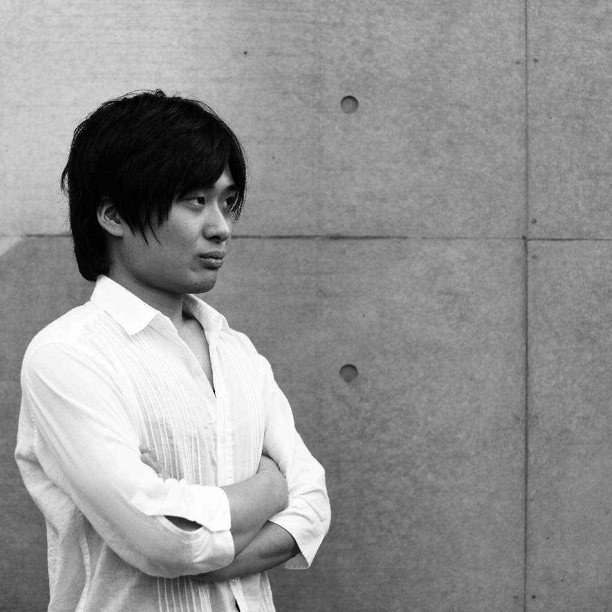

石川 寛朗
制作展 プロデューサー
今年度の東京大学制作展のプロデューサーの石川です。東京大学制作展は、主に大学院学際情報学府の学生が中心になり企画・運営しているテクノロジーを用いた作品の展覧会です。授業や研究の傍ら、毎週一度全員が集まり、運営や作品作りに関して多くの議論をしながら進めています。
私が考える制作展のおもしろさは、それが「大学」という場所で行われることだと思います。私たちは、普段様々な想いで勉強や研究に向かっています。毎日、それぞれ未知の課題を解決するべく、何かを創りあげようとしています。それらを生かし、今回私たちが挑戦するのはアート作品による「表現」です。最先端の研究と表現との融合から、いったい何が生まれてくるのでしょうか。
今回の制作展では、コンセプトとして電源ボタンのあのマークを掲げています。あえて言葉を設定しなかったのは、解釈の多様性を残すためです。ぜひ会場にお越しいただき、私たち一人ひとりの作品を感じてみてほしいと思います。皆さまのご来場を心よりお待ちいたしております。
最後になりましたが、制作展の実現にあたり、ご協力くださいました多くの皆さまに、この場をお借りいたしまして御礼申し上げます。